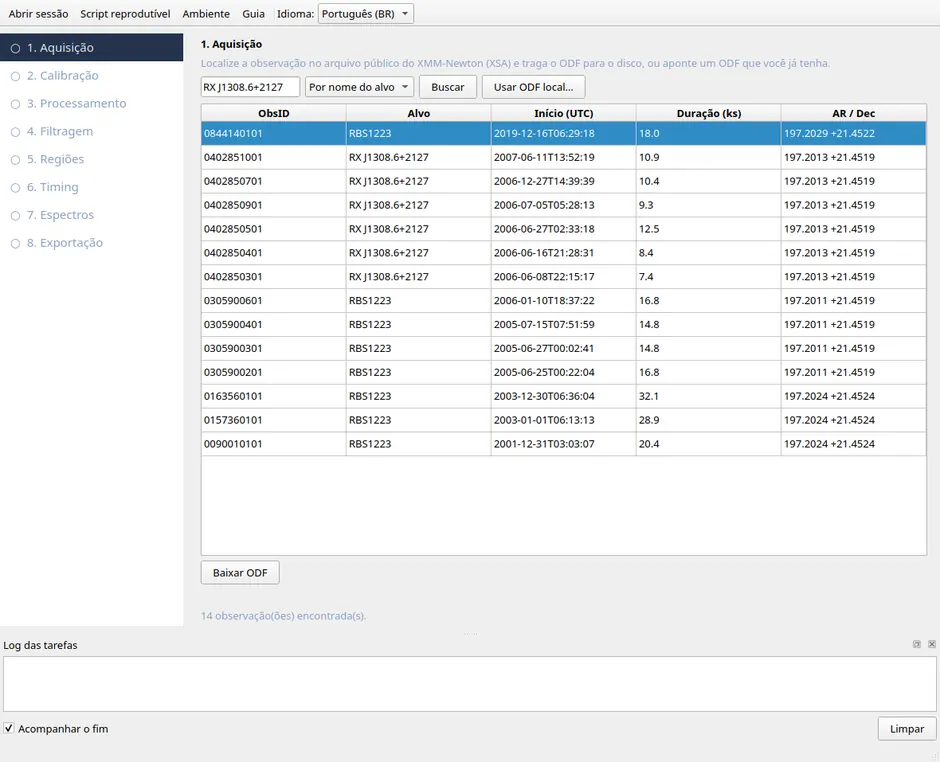
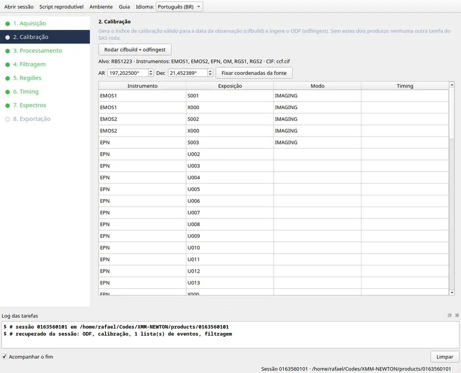
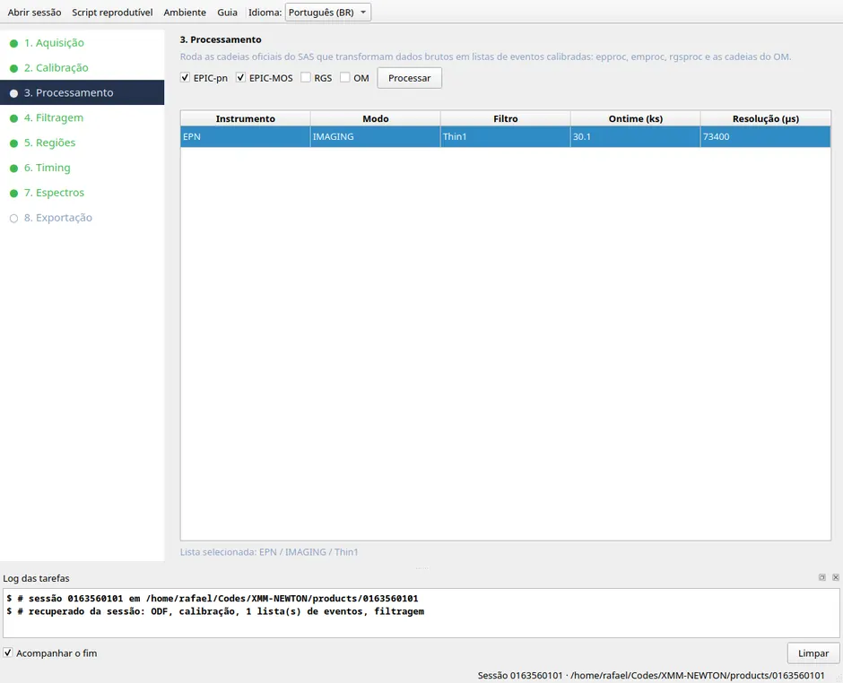
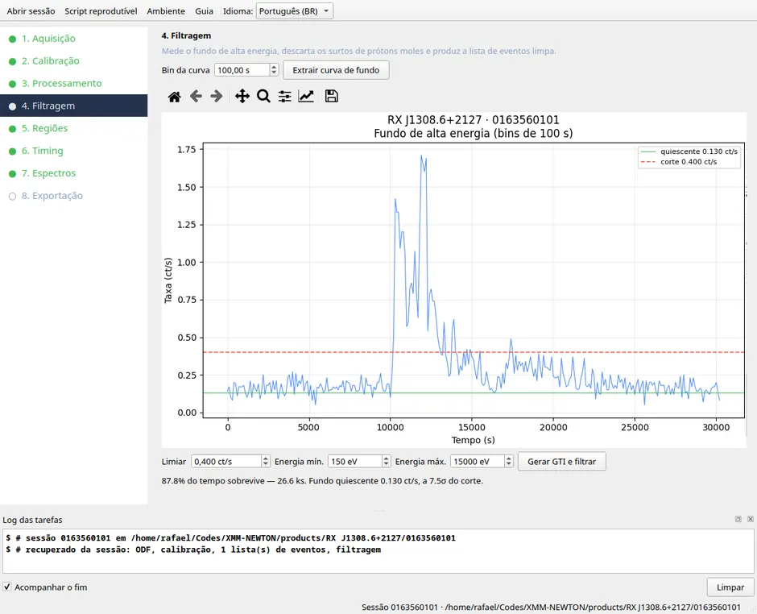
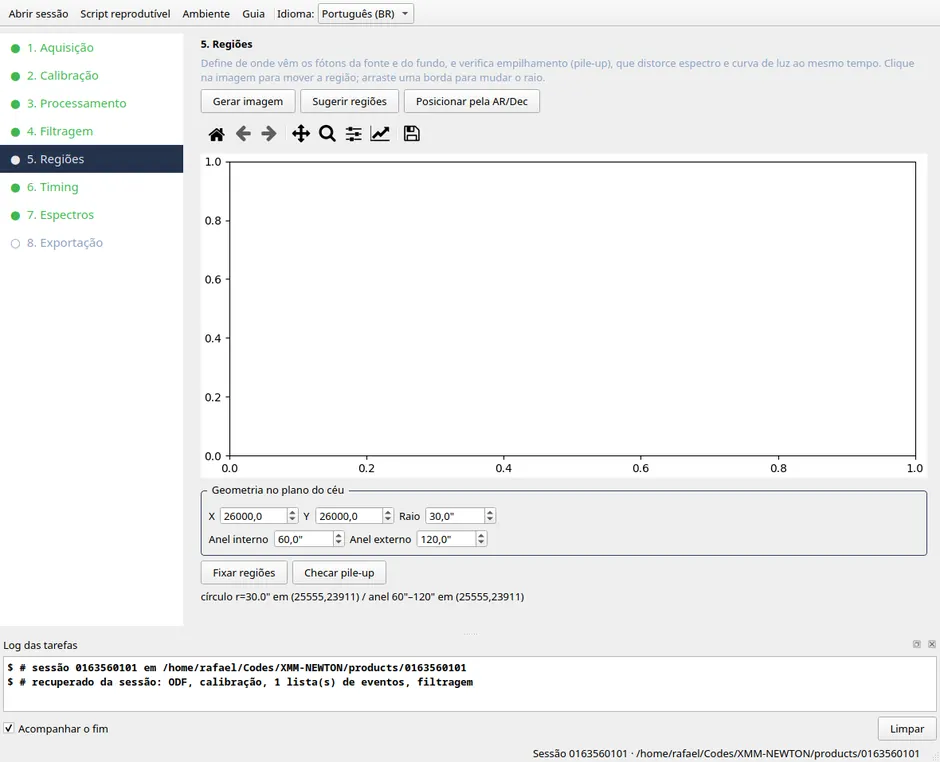
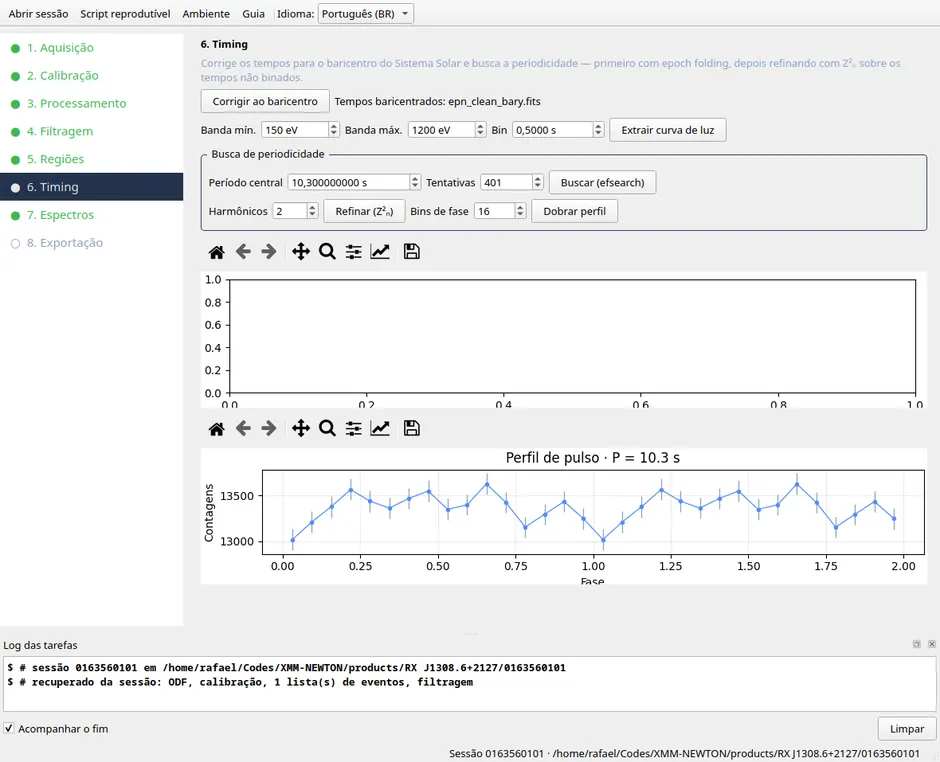
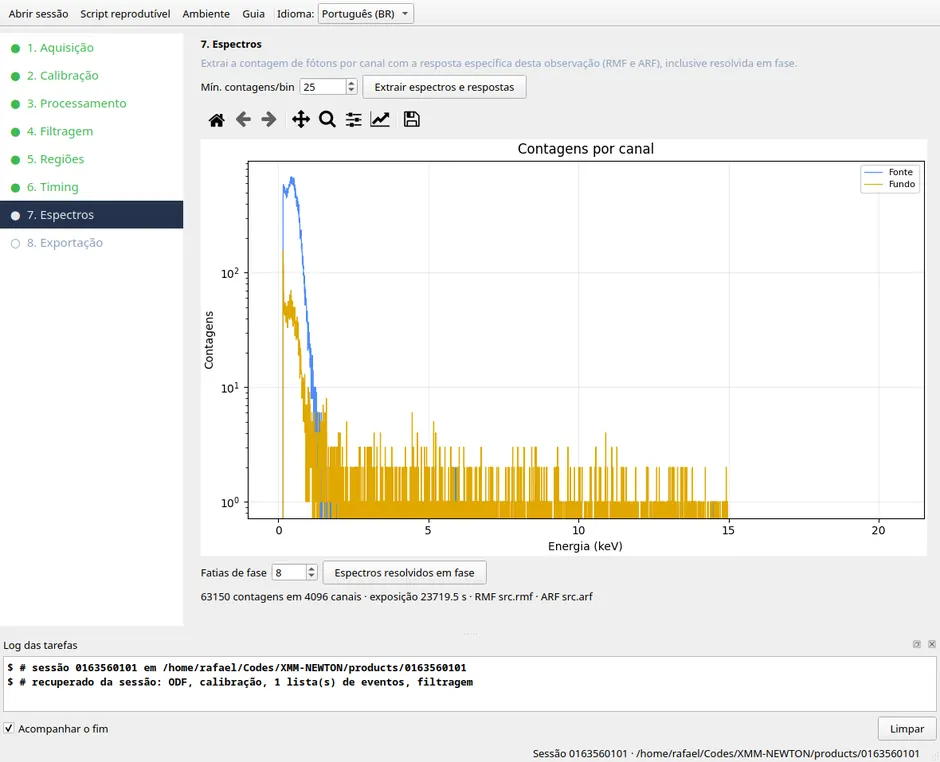
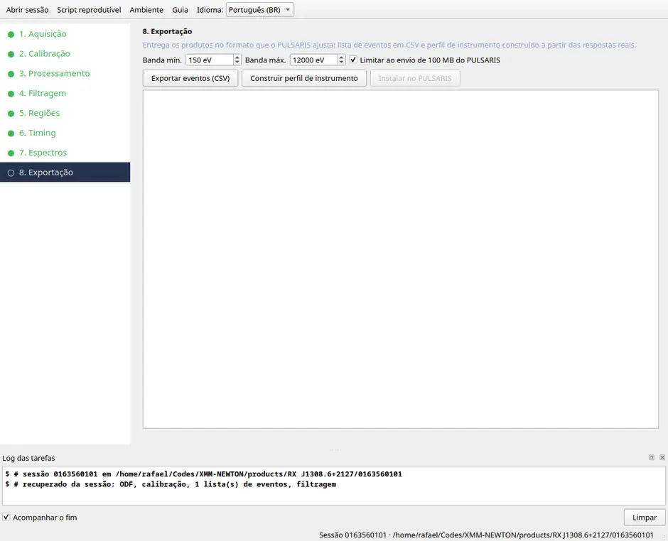

Acquisition
XSA TAP query · AIO download
The search takes a target name — resolved through Sesame — or an ObsID.

- Which observation
- The Duration column ranks what is worth the time. Start with the longest.
- Already have the ODF
- Use local ODF… lists what is already on disk, grouped by source, showing which observations have an extracted ODF. Browse… points at a directory outside the archive.
- Watch out
- The package is 1–2 GB and the XSA server does not support resuming. If the transfer drops, the program starts over and only accepts the file once it can read it end to end.
Calibration
cifbuild · odfingest
Builds the calibration index valid for the observation date and ingests the ODF. No other SAS task runs without these two products.

- Set the coordinates
- RA and Dec come from the ODF summary. Check them and press Set source coordinates: that is the value
barycenuses to correct the arrival times. - The table
- Lists exposures by instrument and mode. The Timing column marks those with resolution suited to fast pulsars.
Processing
epproc · emproc · rgsproc · omichain
The official SAS chains that turn the raw ODF into calibrated event lists. This is the most expensive step of the pipeline.

- How long
- From a minute (EPIC-pn Small Window) to over an hour (Full Frame across 12 CCDs, plus MOS and RGS). The log shows progress and Cancel works.
- Pick the minimum
- For timing, EPIC-pn alone is enough. MOS and RGS cost time and belong here only if you will use them.
- Select the list
- The table carries mode, filter, ontime and time resolution. Click the row you will work with.
Flare filtering
evselect · tabgtigen
The XMM background suffers soft-proton flares that multiply the count rate within minutes. The plot is the high-energy curve, where the source barely contributes.

- The threshold
- The dashed red line is the cut. The default follows ESA's recommendation; changing the field moves the line and the text reports how much exposure survives.
- When to look twice
- If well under 90% of the time survives, inspect the curve before accepting.
- The band
- Keep it wide. Restricting energy here makes it impossible to reuse the same list for spectra and timing in different bands.
Regions
evselect · eregionanalyse · epatplot
Where the source and background photons come from. Two different geometries live here, and confusing them fails silently.

- Imaging mode
- The source is a circle in (X, Y). Locate from RA/Dec converts celestial coordinates into detector ones using the projection stored in the event list itself.
- Timing mode
- There is no useful Y axis: the source is a range of RAWX columns. The controls switch on their own, and Suggest regions applies ESA's defaults.
- Pile-up
- Check pile-up runs
epatplot. Always worth it on a bright source: pile-up distorts spectrum and light curve at once.
Timing
barycen · epiclccorr · efsearch · efold · Z²ₙ
From satellite time to the pulsar's period. The barycentric correction is not optional: without it Earth's motion smears the signal away.

- Order
- Correct to barycentre first, always. Only then extract the light curve.
- The band matters
- Pick where the source emits. For a thermally emitting neutron star, somewhere between 150 and 2000 eV.
- Two passes
- Search (efsearch) sweeps a wide range over the binned curve. Refine (Z²ₙ) uses unbinned arrival times on a narrow grid — more sensitive when the pulsed fraction is low.
- Read the result
- It reports P, Z²ₙ, the H test with its probability and the pulsed fraction. When H picks m > 1 the profile has structure beyond the fundamental, and the RMS value is reported alongside.
Spectra
evselect · backscale · rmfgen · arfgen · phasecalc
Photon counts per channel, with this observation's own response. This is the product PULSARIS fits.

- What comes out
- Source spectrum, background spectrum, RMF and ARF generated for this observation, this region and this detector position — plus the grouped version, ready for XSPEC.
- How long
rmfgenandarfgentake a few minutes each.- Phase-resolved
- Requires the period from step 6. Extracts one spectrum per phase slice — the variation between them is what constrains the geometry.
Export
event CSV · background · instrument profile
Closes the loop, delivering the products in the form PULSARIS fits.

- Three products
- The event CSV for the source region (not the whole field), the background table scaled by BACKSCAL, and the instrument profile built from the real ARF and RMF.
- N_H
- The header receives the Galactic column from HEASoft's
nhtool. That is the column integrated through the Galaxy, hence an upper limit for a nearby source. - Installing is explicit
- Install into PULSARIS shows exactly what will be written and backs up
manifest.jsonbefore touching anything.